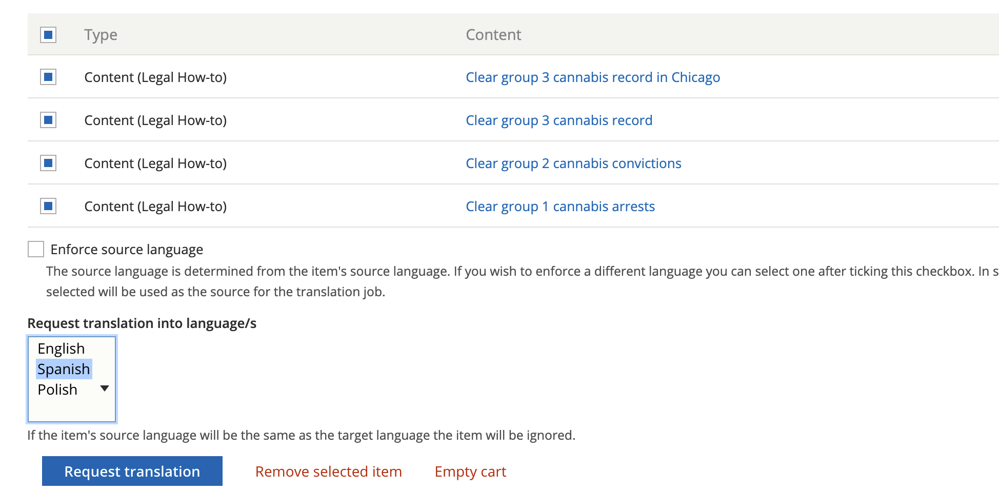

Using the Translation Management System
The translation management system can be used to import and export content for translation. This can be done:
Directly in content, by clicking translate and add to cart or request translation
Using sources under the Translation menu.

Using source, you can:
Filter on a source type. The source type for content items is content. Blocks can also be accessed here.
Filter by Content type
Check the nodes you want to add to cart (you do have to page through all pages)
Checking out a cart
To check out a cart, select the language(s) to translate to and press Request translation.
Check out a job
You can check out a job in Xliff or HTML format. Xliff is usable with POeditor and many translation systems. Check the job out by pressing “Submit to provider” This will then show a file can be downloaded here message.
Importing a file
Translations are in jobs that can then be imported back in by selecting Manage next to the job on the Jobs tab.

This will show a list of content in the job and a space to import a translated file. Once a file is imported, each content needs to be reviewed.

Reviewing content
Pressing review next to an item will show a page with all of the translatable fields.
Press the check next to a translation to approve it
You can change the text if it is incorrect
You can save and return
You can save as completed. This is true even if yu do not approve all translations.